Modélisation dynamique d'une monoplace : d'un point matériel à un modèle simplifié
- POK
- 2023-2024
- temps 1
- Modélisation
- Matlab
- Benoit BEGUIER
Je vais dans ce POK effectuer plusieurs modélisations d'une monoplace. Le but est de commencer par la modélisation la plus simpliste, le point matériel, pour arriver à un modèle plus poussé et permettant de jouer sur plusieurs paramètres qui seront à déterminer.
Niveau : intermédiaire
Prérequis :
- Bases de programmation
- Matlab et Simulink
Pour la réalisation de ce cours, je me réfèrerais aux sources listées ci-dessous :
- Race Car Vehicle Dynamics, de William F. MILLIKEN et Douglas L. MILLIKEN, consulté en pdf.
- Race Car Design, de Derek SEWARD, consulté en pdf.
- MATLAB - Simulink Tutorial for Beginners | Udemy instructor, Dr. Ryan Ahmed, vidéo Youtube accessible ici.
- MATLAB and Simulink Racing Lounge: Vehicle Modeling, package Matlab accessible ici.
- OpenLAP-Lap-Time-Simulator, package Matlab accessible ici
Sommaire
- Objectifs
- Tâtonnement
- Première modélisation du comportement dynamique d'une monoplace
- Etablir les paramètres d'intérêts pour une étude dynamique
- Nouvelle modélisation plus approfondie
- Simulateur de temps au tour
Objectifs
Voici les objectifs que je me suis fixé :
- Documentation personnelle et analyse de l'existant (★★★☆☆)
- Modélisation dynamique simple du comportement d'une monoplace (★★★☆☆)
- Etablir les paramètres d'intérêt pour une étude dynamique (★★☆☆☆)
- Complexifier l'étude avec un paramétrage plus poussé (★★★★☆)
- Simuler des temps aux tours d'une modélisation (★★★☆☆)
- Observer l'impact des paramètres d'intérêt (★★★☆☆)
Tâtonnement
Comment s'y prendre ?
A l'heure où je débute ce projet, je ne sais pas encore par quel bout le prendre. Je décide alors de me renseigner sur l'existant de la modélisation de la dynamique d'un véhicule par un point matériel, et ce sur Matlab ou sur un autre logiciel.
J'ai passé plus de temps que prévu sur la documentation et la recherche. J'ai aussi du regarder une vidéo Youtube de 1 heure pour me remettre à niveau sur Simulink.
J'ai ensuite consulté sans m'attarder les deux documents .pdf, qui donnent les bases dynamiques d'un véhicule. Ceux-ci me permettent d'estimer plus précisément les paramètres importants à prendre en compte.
Je décide de m'orienter vers le package MATLAB and Simulink Racing Lounge: Vehicle Modeling accessible ici. Une fois celui-ci téléchargé, je peux commencer ma modélisation.
Première modélisation du comportement dynamique d'une monoplace
Prise en main de la bibliothèque
J'ai commencé par me mettre à jour sur le contenu de la bibliothèque. Celle-ci étant très fournie, j'effectue alors des petits tests pour visualiser des données simples, telles que l'angle du volant.

J'ai visualisé la vidéo de présentation d'une trentaine de minutes afin de mieux me familiariser avec le package.
Réalisation d'une première modélisation
Objectif : Modéliser une monoplace par un point matériel et vérifier la cohérence du modèle
J'ai alors réalisé un premier modèle basé sur une représentation en un seul point de la monoplace. Ce point de masse m est soumis à la force de traînée, l'inertie, le poids et la résistance au roulement (Source : Zongxuan Sun, Guoming G. Zhu, Design and Control of Automotive Propulsion Systems, e-Book).
Le but de cette modélisation est de soumettre le véhicule à un cycle de vitesse de référence : j'ai ici choisi le cycle classique EPA US06 effectué lors des tests de sécurité sur les prototypes automobiles aux Etats-Unis.
Vous pourrez trouver plus d'informations sur le cycle EPA US06 ici
Pour ma modélisation, le pilote applique une force de traction (opérée par la pédale d'accélérateur) sur le véhicule pour que le véhicule ait la vitesse la plus proche possible de celle exigée par le cycle de référence. Le pilote agit donc comme un correcteur.
Le véhicule est quant à lui modélisé à partir des lois physiques auxquelles il obéit, et que je ne détaillerai pas dans ce POK. Je les ajouter cependant dans l'Annexe en fin de document pour les intéressés.

Résultats
Après avoir exécuté la modélisation Simulink, j'obtiens un graphique comparant la vitesse exigée par le cycle et la vitesse réelle de la monoplace. Nous constatons que ces deux courbes sont très proches et qu'il faut zoomer pour voir une différence.
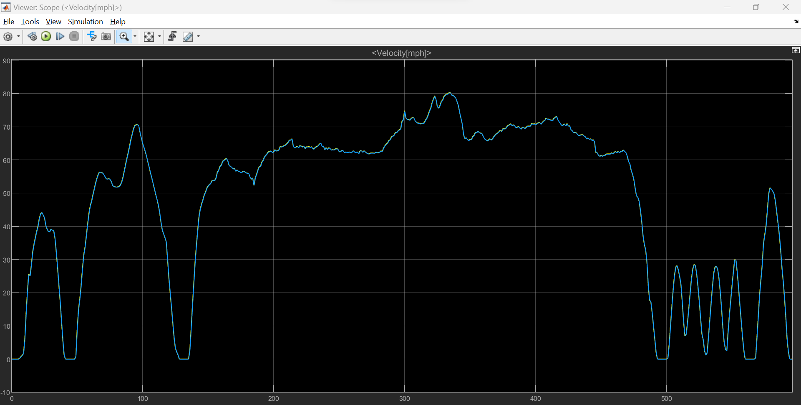
L'écart le plus important que j'ai noté est de 0.2 mph (comprenez miles per hour), soit en comparant à la vitesse demandée un écart de 0.3%.
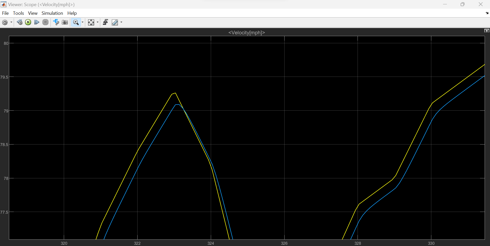
Nous pouvons affirmer que nous respectons ce cycle de conduite, et que la force de traction ainsi que la puissance utilisées pour cette masse sont tout à fait adéquates pour le respecter.
Conclusion
Cet écart pourrait paraître négligeable, et la modélisataion jugée suffisante. Cependant, le sport automobile reposant sur l'optimisation permanente, je décide de continuer mon travail et de fournir une modélisation plus poussée. J'espère pouvoir en tirer un modèle plus proche de la réalité, ce qui ne se traduira pas pour autant par un gain de temps ou de vitesse.
Etablir les paramètres d'intérêts pour une étude dynamique
Faiblesses de mon premier modèle
La première modélisation ne prends pas en compte plusieurs paramètres importants :
- Le système de freinage
- L'aérodynamique générale et la carrosserie
- La transmission
Liste des paramètres
Les paramètres cruciaux pour une telle simulation sont :
- La vitesse V du véhicule (car la traînée est proportionnelle au carré de V)
- La masse du véhicule
- La résistance au roulement
Nouvelle modélisation plus approfondie
Je décide cette fois de prendre en compte le système de freinage disponible pour le pilote, et de modéliser directement un sous-bloc moteur et un sous-bloc de transmission.
Les paramètres suivants sont ainsi ajoutés :
- Couple moteur
- Pédale de frein
- Transmission
La transmission est assez simple. Elle doit simplement transmettre le couple du moteur au modèle de point matériel. Elle prend en entrée le couple moteur, la force de freinage provenant de notre sous-système de conduite et la vitesse du véhicule. Les sorties de la chaîne cinématique sont la force de traction que nous envoyons au point matériel et la vitesse du moteur.
La chaîne dans son entièreté est représentée ci-dessous :
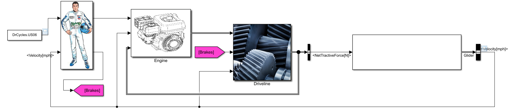
Résultats
Je décide de lancer la modélisation avec la même "stimulation" en entrée, c'est-à-dire le cycle de vitesse de référence US06. Voici le résultat en sortie du bloc du véhicule :
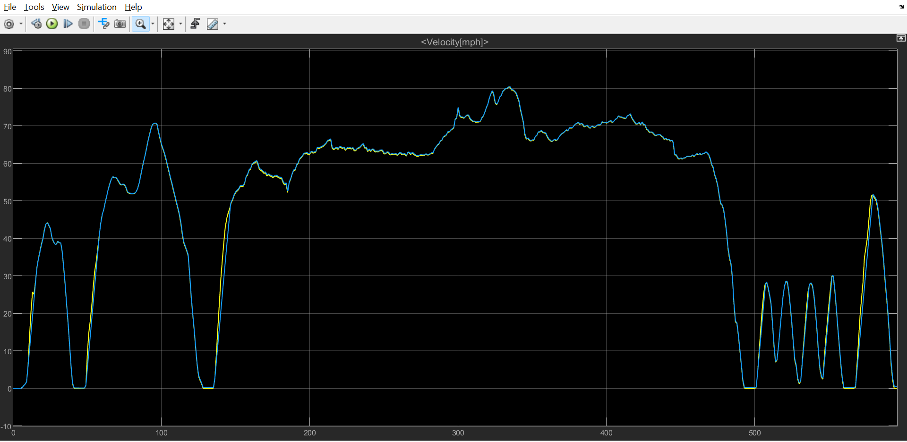
Dans l'ensemble, la courbe bleue est moins proche de la courbe jaune (ici la référence). Je rajoute un bloc qui permet d'afficher les écarts moyens, j'obtiens en moyenne un écart de 0.4 mph là ou il représentait 0.05 mph pour le modèle précédent.
Il est aussi utile de s'intéresser aux résultats locaux, c'est-à-dire aux réponses du véhicule aux singularités de la courbe de référence.
- Lors des consignes d'accélération vive, la réponse est très en retard, de l'ordre de 2 secondes, ce qui se traduit par une différence de vitesse instantanée par rapport à la référence de 10 mph soit environ 16%!

- Lors des consignes constantes avec une petite oscillation, on constate un écart de vitesse par rapport à la référence d'environ 0.25 mph.
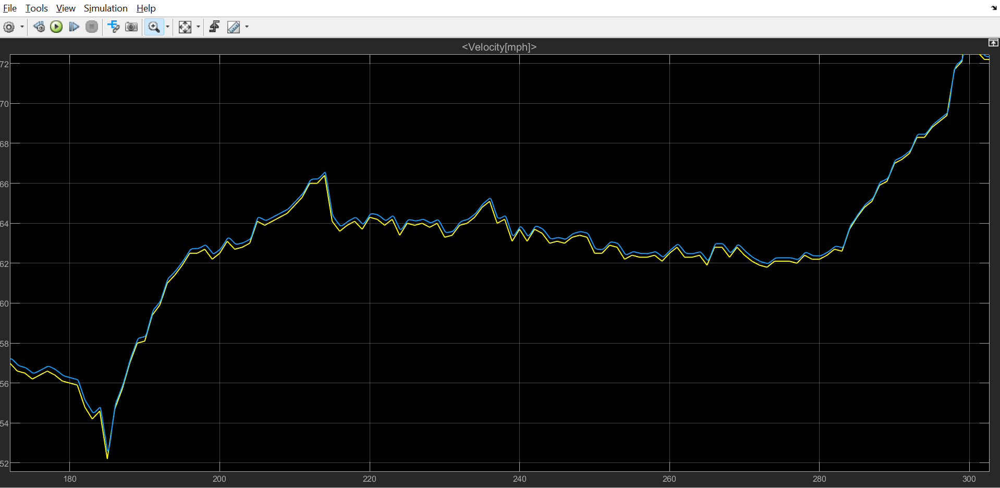
Conclusion sur le modèle
Il m'est assez difficile de conclure sur la pertinence de mon modèle et sa précision. En rajoutant plus de paramètres, les courbes semblent montrer que le modèle est plus difficilement maniable et adaptable par rapport au cycle de référence.
Cependant, est-ce uniquement dû aux nouveaux paramètres pris en compte, je ne saurais le dire.
Simulateur de temps au tour
Découverte de OpenLAP-Lap-Time-Simulator
Le package OpenLAP-Lap-Time-Simulator a été créé par Michael CHALKIOPOULOS. Ce package est divisé en 4 fonctions :
- OpenVEHICLE pour créer un véhicule
- OpenTRACK pour créer une piste de course
- OpenDRAG pour simuler des courses en ligne droite du véhicule créé avec OpenVEHICLE, et obtenir des informations sur la traînée
- OpenLAP, pour simuler des temps au tour
Je vais donc procéder par l'ordre logique que je viens de décrire afin d'arriver à mes fins.
OpenVEHICLE
La première fonction MATLAB prend en argument un fichier Excel à remplir. Celui-ci permet de décrire à MATLAB nos contraintes techniques, telles que la masse du véhicule, le nombre de rapport de la boîte de vitesse, la dimension des disques de frein...
J'ai rempli le fichier à partir des données techniques et du règlement technique 2022 de la Formule 1 (disponible ici). J'ai néanmoins du faire quelques approximations, notamment sur les rayons des disques de frein ainsi que celui des roues. En effet, la structure du fichier ne permet de rentrer qu'un seul rayon en supposant qu'il est identique pour les quatres roues, cependant celui-ci varie entre l'essieu avant et l'essieu arrière. J'ai à chaque fois indiqué dans le document le rayon le plus petit (celui de l'essieu AR)
J'ai extrait les rapport de boîte en me basant sur ceux provenant de la Redbull RB18 (Source).
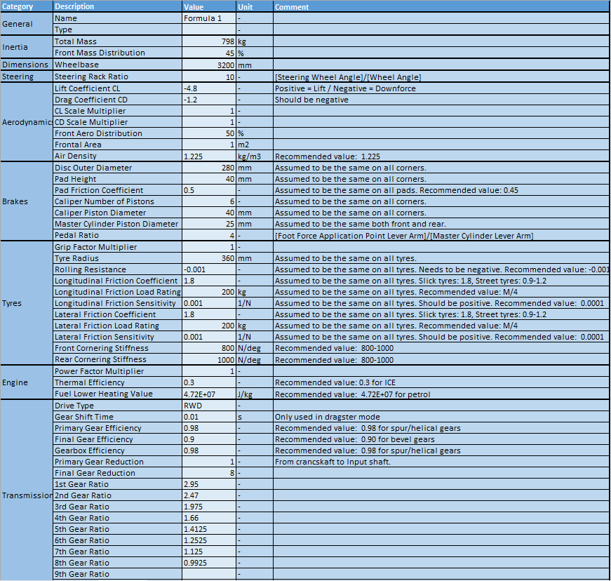
Extrait du fichier Excel recensant les paramètres du véhicule à partir du règlement FIA 2022.

Détail du couple moteur associé à chaque régime moteur.
J'obtiens la visualisation ci-dessous une fois le programme exécuté :
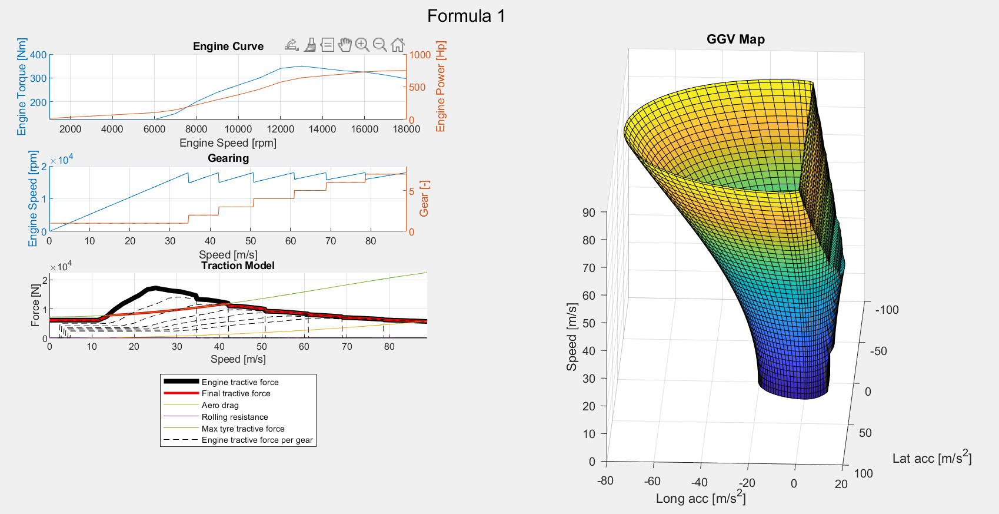
-
La courbe Engine Curve affiche la puissance (en chevaux, hp) et le couple disponibles en fonction du régime moteur. Le couple maximal de 350 N.M est disponible à 13 000 tr/min, tandis que la puissance maximale de 750 hp est disponible à 18 000 tr/min.
Il est nécessaire d'ajouter que les Formule 1 actuelles (y compris celles de 2022 comme notre modélisation) génèrent plus de 1000 hp dans la réalité mais à l'aide d'un système électrique additionnel (ERS, composé de MGU-H et MGU-K, plus d'infos ici). -
La courbe Gearing représente le rapport de boîte engagé par rapport à la vitesse de rotation du moteur. Je ne détaillerai pas plus cette section.
-
La courbe Traction Model montre la force de traction générée par le moteur (en gras noir) par rapport à la force de traction finale (en rouge). La perte de traction est due à la traînée (en orange) et à la résistance au roulement (en violet, difficilement visible sur ce graphique). Cette courbe donne des données cruciales sur les performances que l'on peut attendre de notre véhicule grâce à une modélisation rapide.
-
Enfin, le graphique en 3D (généralement appelé enveloppe de performance ou GGV Diagram) représente les accélérations longitudinales et latérales subies par le véhicule en fonction de sa vitesse (en m/s). Nous pouvons notamment en déduire la "force g" subie par le pilote lors des freinages ou des accélérations longitudinales.
Cliquez pour afficher le code d'OpenVEHICLE
Cliquez pour afficher le code d'OpenVEHICLE
%% OpenLAP Laptime Simulation Project
%
% OpenVEHICLE
%
% Racing vehicle model file creation for use in OpenLAP and OpenDRAG.
% This software is licensed under the GPL V3 Open Source License.
%
% Open Source MATLAB project created by:
%
% Michael Halkiopoulos
% Cranfield University Advanced Motorsport MSc Engineer
% National Technical University of Athens MEng Mechanical Engineer
%
% LinkedIn: https://www.linkedin.com/in/michael-halkiopoulos/
% email: halkiopoulos_michalis@hotmail.com
% MATLAB file exchange: https://uk.mathworks.com/matlabcentral/fileexchange/
% GitHub: https://github.com/mc12027
%
% April 2020.
%% Clearing Memory
clear
clc
close all force
diary('off')
fclose('all') ;
%% Vehicle file selection
filename = 'Formula 1.xlsx' ;
%% Reading vehicle file
info = read_info(filename,'Info') ;
data = read_torque_curve(filename,'Torque Curve') ;
%% Getting variables
% info
name = table2array(info(1,2)) ;
type = table2array(info(2,2)) ;
% index
i = 3 ;
% mass
M = str2double(table2array(info(i,2))) ; i = i+1 ; % [kg]
df = str2double(table2array(info(i,2)))/100 ; i = i+1 ; % [-]
% wheelbase
L = str2double(table2array(info(i,2)))/1000 ; i = i+1 ; % [m]
% steering rack ratio
rack = str2double(table2array(info(i,2))) ; i = i+1 ; % [-]
% aerodynamics
Cl = str2double(table2array(info(i,2))) ; i = i+1 ; % [-]
Cd = str2double(table2array(info(i,2))) ; i = i+1 ; % [-]
factor_Cl = str2double(table2array(info(i,2))) ; i = i+1 ; % [-]
factor_Cd = str2double(table2array(info(i,2))) ; i = i+1 ; % [-]
da = str2double(table2array(info(i,2)))/100 ; i = i+1 ; % [-]
A = str2double(table2array(info(i,2))) ; i = i+1 ; % [m2]
rho = str2double(table2array(info(i,2))) ; i = i+1 ; % [kg/m3]
% brakes
br_disc_d = str2double(table2array(info(i,2)))/1000 ; i = i+1 ; % [m]
br_pad_h = str2double(table2array(info(i,2)))/1000 ; i = i+1 ; % [m]
br_pad_mu = str2double(table2array(info(i,2))) ; i = i+1 ; % [m]
br_nop = str2double(table2array(info(i,2))) ; i = i+1 ; % [m]
br_pist_d = str2double(table2array(info(i,2))) ; i = i+1 ; % [m]
br_mast_d = str2double(table2array(info(i,2))) ; i = i+1 ; % [m]
br_ped_r = str2double(table2array(info(i,2))) ; i = i+1 ; % [m]
% tyres
factor_grip = str2double(table2array(info(i,2))) ; i = i+1 ; % [-]
tyre_radius = str2double(table2array(info(i,2)))/1000 ; i = i+1 ; % [m]
Cr = str2double(table2array(info(i,2))) ; i = i+1 ; % [-]
mu_x = str2double(table2array(info(i,2))) ; i = i+1 ; % [-]
mu_x_M = str2double(table2array(info(i,2))) ; i = i+1 ; % [1/kg]
sens_x = str2double(table2array(info(i,2))) ; i = i+1 ; % [-]
mu_y = str2double(table2array(info(i,2))) ; i = i+1 ; % [-]
mu_y_M = str2double(table2array(info(i,2))) ; i = i+1 ; % [1/kg]
sens_y = str2double(table2array(info(i,2))) ; i = i+1 ; % [-]
CF = str2double(table2array(info(i,2))) ; i = i+1 ; % [N/deg]
CR = str2double(table2array(info(i,2))) ; i = i+1 ; % [N/deg]
% engine
factor_power = str2double(table2array(info(i,2))) ; i = i+1 ;
n_thermal = str2double(table2array(info(i,2))) ; i = i+1 ;
fuel_LHV = str2double(table2array(info(i,2))) ; i = i+1 ; % [J/kg]
% drivetrain
drive = table2array(info(i,2)) ; i = i+1 ;
shift_time = str2double(table2array(info(i,2))) ; i = i+1 ; % [s]
n_primary = str2double(table2array(info(i,2))) ; i = i+1 ;
n_final = str2double(table2array(info(i,2))) ; i = i+1 ;
n_gearbox = str2double(table2array(info(i,2))) ; i = i+1 ;
ratio_primary = str2double(table2array(info(i,2))) ; i = i+1 ;
ratio_final = str2double(table2array(info(i,2))) ; i = i+1 ;
ratio_gearbox = str2double(table2array(info(i:end,2))) ;
nog = length(ratio_gearbox) ;
%% HUD
[folder_status,folder_msg] = mkdir('OpenVEHICLE Vehicles') ;
vehname = "OpenVEHICLE Vehicles/OpenVEHICLE_"+name+"_"+type ;
delete(vehname+".log") ;
diary(vehname+".log") ;
disp([...
'_______ ___ ________________ ________________________________';...
'__ __ \_____________________ | / /__ ____/__ / / /___ _/_ ____/__ /___ ____/';...
'_ / / /__ __ \ _ \_ __ \_ | / /__ __/ __ /_/ / __ / _ / __ / __ __/ ';...
'/ /_/ /__ /_/ / __/ / / /_ |/ / _ /___ _ __ / __/ / / /___ _ /___ /___ ';...
'\____/ _ .___/\___//_/ /_/_____/ /_____/ /_/ /_/ /___/ \____/ /_____/_____/ ';...
' /_/ '...
]) ;
disp('====================================================================================')
disp(filename)
disp('File read successfully')
disp('====================================================================================')
disp("Name: "+name)
disp("Type: "+type)
disp("Date: "+datestr(now,'dd/mm/yyyy'))
disp("Time: "+datestr(now,'HH:MM:SS'))
disp('====================================================================================')
disp('Vehicle generation started.')
%% Brake Model
br_pist_a = br_nop*pi*(br_pist_d/1000)^2/4 ; % [m2]
br_mast_a = pi*(br_mast_d/1000)^2/4 ; % [m2]
beta = tyre_radius/(br_disc_d/2-br_pad_h/2)/br_pist_a/br_pad_mu/4 ; % [Pa/N] per wheel
phi = br_mast_a/br_ped_r*2 ; % [-] for both systems
% HUD
disp('Braking model generated successfully.')
%% Steering Model
a = (1-df)*L ; % distance of front axle from center of mass [mm]
b = -df*L ; % distance of rear axle from center of mass [mm]
C = 2*[CF,CF+CR;CF*a,CF*a+CR*b] ; % steering model matrix
% HUD
disp('Steering model generated successfully.')
%% Driveline Model
% fetching engine curves
en_speed_curve = table2array(data(:,1)) ; % [rpm]
en_torque_curve = table2array(data(:,2)) ; % [N*m]
en_power_curve = en_torque_curve.*en_speed_curve*2*pi/60 ; % [W]
% memory preallocation
% wheel speed per gear for every engine speed value
wheel_speed_gear = zeros(length(en_speed_curve),nog) ;
% vehicle speed per gear for every engine speed value
vehicle_speed_gear = zeros(length(en_speed_curve),nog) ;
% wheel torque per gear for every engine speed value
wheel_torque_gear = zeros(length(en_torque_curve),nog) ;
% calculating values for each gear and engine speed
for i=1:nog
wheel_speed_gear(:,i) = en_speed_curve/ratio_primary/ratio_gearbox(i)/ratio_final ;
vehicle_speed_gear(:,i) = wheel_speed_gear(:,i)*2*pi/60*tyre_radius ;
wheel_torque_gear(:,i) = en_torque_curve*ratio_primary*ratio_gearbox(i)*ratio_final*n_primary*n_gearbox*n_final ;
end
% minimum and maximum vehicle speeds
v_min = min(vehicle_speed_gear,[],'all') ;
v_max = max(vehicle_speed_gear,[],'all') ;
% new speed vector for fine meshing
dv = 0.5/3.6 ;
vehicle_speed = linspace(v_min,v_max,(v_max-v_min)/dv)' ;
% memory preallocation
% gear
gear = zeros(length(vehicle_speed),1) ;
% engine tractive force
fx_engine = zeros(length(vehicle_speed),1) ;
% engine tractive force per gear
fx = zeros(length(vehicle_speed),nog) ;
% optimising gear selection and calculating tractive force
for i=1:length(vehicle_speed)
% going through the gears
for j=1:nog
fx(i,j) = interp1(vehicle_speed_gear(:,j),wheel_torque_gear(:,j)/tyre_radius,vehicle_speed(i),'linear',0) ;
end
% getting maximum tractive force and gear
[fx_engine(i),gear(i)] = max(fx(i,:)) ;
end
% adding values for 0 speed to vectors for interpolation purposes at low speeds
vehicle_speed = [0;vehicle_speed] ;
gear = [gear(1);gear] ;
fx_engine = [fx_engine(1);fx_engine] ;
% final vectors
% engine speed
engine_speed = ratio_final*ratio_gearbox(gear)*ratio_primary.*vehicle_speed/tyre_radius*60/2/pi ;
% wheel torque
wheel_torque = fx_engine*tyre_radius ;
% engine torque
engine_torque = wheel_torque/ratio_final./ratio_gearbox(gear)/ratio_primary/n_primary/n_gearbox/n_final ;
% engine power
engine_power = engine_torque.*engine_speed*2*pi/60 ;
% HUD
disp('Driveline model generated successfully.')
%% Shifting Points and Rev Drops
% finding gear changes
gear_change = diff(gear) ; % gear change will appear as 1
% getting speed right before and after gear change
gear_change = logical([gear_change;0]+[0;gear_change]) ;
% getting engine speed at gear change
engine_speed_gear_change = engine_speed(gear_change) ;
% getting shift points
shift_points = engine_speed_gear_change(1:2:length(engine_speed_gear_change)) ;
% getting arrive points
arrive_points = engine_speed_gear_change(2:2:length(engine_speed_gear_change)) ;
% calculating revdrops
rev_drops = shift_points-arrive_points ;
% creating shifting table
rownames = cell(nog-1,1) ;
for i=1:nog-1
rownames(i) = {[num2str(i,'%d'),'-',num2str(i+1,'%d')]} ;
end
shifting = table(shift_points,arrive_points,rev_drops,'RowNames',rownames) ;
% HUD
disp('Shift points calculated successfully.')
%% Force model
% gravitational constant
g = 9.81 ;
% drive and aero factors
switch drive
case 'RWD'
factor_drive = (1-df) ; % weight distribution
factor_aero = (1-da) ; % aero distribution
driven_wheels = 2 ; % number of driven wheels
case 'FWD'
factor_drive = df ;
factor_aero = da ;
driven_wheels = 2 ;
otherwise % AWD
factor_drive = 1 ;
factor_aero = 1 ;
driven_wheels = 4 ;
end
% Z axis
fz_mass = -M*g ;
fz_aero = 1/2*rho*factor_Cl*Cl*A*vehicle_speed.^2 ;
fz_total = fz_mass+fz_aero ;
fz_tyre = (factor_drive*fz_mass+factor_aero*fz_aero)/driven_wheels ;
% x axis
fx_aero = 1/2*rho*factor_Cd*Cd*A*vehicle_speed.^2 ;
fx_roll = Cr*abs(fz_total) ;
fx_tyre = driven_wheels*(mu_x+sens_x*(mu_x_M*g-abs(fz_tyre))).*abs(fz_tyre) ;
% HUD
disp('Forces calculated successfully.')
%% GGV Map
% track data
bank = 0 ;
incl = 0 ;
% lateral tyre coefficients
dmy = factor_grip*sens_y ;
muy = factor_grip*mu_y ;
Ny = mu_y_M*g ;
% longitudinal tyre coefficients
dmx = factor_grip*sens_x ;
mux = factor_grip*mu_x ;
Nx = mu_x_M*g ;
% normal load on all wheels
Wz = M*g*cosd(bank)*cosd(incl) ;
% induced weight from banking and inclination
Wy = -M*g*sind(bank) ;
Wx = M*g*sind(incl) ;
% speed map vector
dv = 2 ;
v = (0:dv:v_max)' ;
if v(end)~=v_max
v = [v;v_max] ;
end
% friction ellipse points
N = 45 ;
% map preallocation
GGV = zeros(length(v),2*N-1,3) ;
for i=1:length(v)
% aero forces
Aero_Df = 1/2*rho*factor_Cl*Cl*A*v(i)^2 ;
Aero_Dr = 1/2*rho*factor_Cd*Cd*A*v(i)^2 ;
% rolling resistance
Roll_Dr = Cr*abs(-Aero_Df+Wz) ;
% normal load on driven wheels
Wd = (factor_drive*Wz+(-factor_aero*Aero_Df))/driven_wheels ;
% drag acceleration
ax_drag = (Aero_Dr+Roll_Dr+Wx)/M ;
% maximum lat acc available from tyres
ay_max = 1/M*(muy+dmy*(Ny-(Wz-Aero_Df)/4))*(Wz-Aero_Df) ;
% max long acc available from tyres
ax_tyre_max_acc = 1/M*(mux+dmx*(Nx-Wd))*Wd*driven_wheels ;
% max long acc available from tyres
ax_tyre_max_dec = -1/M*(mux+dmx*(Nx-(Wz-Aero_Df)/4))*(Wz-Aero_Df) ;
% getting power limit from engine
ax_power_limit = 1/M*(interp1(vehicle_speed,factor_power*fx_engine,v(i))) ;
ax_power_limit = ax_power_limit*ones(N,1) ;
% lat acc vector
ay = ay_max*cosd(linspace(0,180,N))' ;
% long acc vector
ax_tyre_acc = ax_tyre_max_acc*sqrt(1-(ay/ay_max).^2) ; % friction ellipse
ax_acc = min(ax_tyre_acc,ax_power_limit)+ax_drag ; % limiting by engine power
ax_dec = ax_tyre_max_dec*sqrt(1-(ay/ay_max).^2)+ax_drag ; % friction ellipse
% saving GGV map
GGV(i,:,1) = [ax_acc',ax_dec(2:end)'] ;
GGV(i,:,2) = [ay',flipud(ay(2:end))'] ;
GGV(i,:,3) = v(i)*ones(1,2*N-1) ;
end
% HUD
disp('GGV map generated successfully.')
%% Saving vehicle
% saving
save(vehname+".mat")
%% Plot
% figure
set(0,'units','pixels') ;
SS = get(0,'screensize') ;
H = 900-90 ;
W = 900 ;
Xpos = floor((SS(3)-W)/2) ;
Ypos = floor((SS(4)-H)/2) ;
f = figure('Name','Vehicle Model','Position',[Xpos,Ypos,W,H]) ;
sgtitle(name)
% rows and columns
rows = 4 ;
cols = 2 ;
% engine curves
subplot(rows,cols,1)
hold on
title('Engine Curve')
xlabel('Engine Speed [rpm]')
yyaxis left
plot(en_speed_curve,factor_power*en_torque_curve)
ylabel('Engine Torque [Nm]')
grid on
xlim([en_speed_curve(1),en_speed_curve(end)])
yyaxis right
plot(en_speed_curve,factor_power*en_power_curve/745.7)
ylabel('Engine Power [Hp]')
% gearing
subplot(rows,cols,3)
hold on
title('Gearing')
xlabel('Speed [m/s]')
yyaxis left
plot(vehicle_speed,engine_speed)
ylabel('Engine Speed [rpm]')
grid on
xlim([vehicle_speed(1),vehicle_speed(end)])
yyaxis right
plot(vehicle_speed,gear)
ylabel('Gear [-]')
ylim([gear(1)-1,gear(end)+1])
% traction model
subplot(rows,cols,[5,7])
hold on
title('Traction Model')
plot(vehicle_speed,factor_power*fx_engine,'k','LineWidth',4)
plot(vehicle_speed,min([factor_power*fx_engine';fx_tyre']),'r','LineWidth',2)
plot(vehicle_speed,-fx_aero)
plot(vehicle_speed,-fx_roll)
plot(vehicle_speed,fx_tyre)
for i=1:nog
plot(vehicle_speed(2:end),fx(:,i),'k--')
end
grid on
xlabel('Speed [m/s]')
ylabel('Force [N]')
xlim([vehicle_speed(1),vehicle_speed(end)])
legend({'Engine tractive force','Final tractive force','Aero drag','Rolling resistance','Max tyre tractive force','Engine tractive force per gear'},'Location','southoutside')
% ggv map
subplot(rows,cols,[2,4,6,8])
hold on
title('GGV Map')
surf(GGV(:,:,2),GGV(:,:,1),GGV(:,:,3))
grid on
xlabel('Lat acc [m/s^2]')
ylabel('Long acc [m/s^2]')
zlabel('Speed [m/s]')
% xlim([-ay_max,ay_max])
% ylim([min(GGV(:,:,1),[],'all'),max(GGV(:,:,1),[],'all')])
view(105,5)
set(gca,'DataAspectRatio',[1 1 0.8])
% cbar = colorbar ;
% set(get(cbar,'Title'),'String','Speed [m/s]')
% saving figure
savefig(vehname+".fig")
% HUD
disp('Plots created and saved.')
%% HUD
% HUD
disp('Vehicle generated successfully.')
% diary
diary('off') ;
%% Functions
%%%%%%%%%%%%%%%%%%%%%%%%%%%%%%%%%%%%%%%%%%%%%%%%%%%%%%%%%%%%%%%%%%%%%%%%%%%
function [data] = read_torque_curve(workbookFile,sheetName,startRow,endRow)
% Input handling
% If no sheet is specified, read first sheet
if nargin == 1 || isempty(sheetName)
sheetName = 1;
end
% If row start and end points are not specified, define defaults
if nargin <= 3
startRow = 2;
endRow = 10000;
end
% Setup the Import Options
opts = spreadsheetImportOptions("NumVariables", 2);
% Specify sheet and range
opts.Sheet = sheetName;
opts.DataRange = "A" + startRow(1) + ":B" + endRow(1);
% Specify column names and types
opts.VariableNames = ["Engine_Speed_rpm", "Torque_Nm"];
opts.VariableTypes = ["double", "double"];
% Setup rules for import
opts.MissingRule = "omitrow";
opts = setvaropts(opts, [1, 2], "TreatAsMissing", '');
% Import the data
data = readtable(workbookFile, opts, "UseExcel", false);
for idx = 2:length(startRow)
opts.DataRange = "A" + startRow(idx) + ":B" + endRow(idx);
tb = readtable(workbookFile, opts, "UseExcel", false);
data = [data; tb]; %#ok<AGROW>
end
end
%%%%%%%%%%%%%%%%%%%%%%%%%%%%%%%%%%%%%%%%%%%%%%%%%%%%%%%%%%%%%%%%%%%%%%%%%%%
function [data] = read_info(workbookFile,sheetName,startRow,endRow)
% Input handling
% If no sheet is specified, read first sheet
if nargin == 1 || isempty(sheetName)
sheetName = 1;
end
% If row start and end points are not specified, define defaults
if nargin <= 3
startRow = 2;
endRow = 10000;
end
% Setup the Import Options
opts = spreadsheetImportOptions("NumVariables", 2);
% Specify sheet and range
opts.Sheet = sheetName;
opts.DataRange = "B" + startRow(1) + ":C" + endRow(1);
% Specify column names and types
opts.VariableNames = ["Variable", "Value"];
opts.VariableTypes = ["string", "string"];
% Setup rules for import
opts.MissingRule = "omitrow";
opts = setvaropts(opts, [1, 2], "TreatAsMissing", '');
% Import the data
data = readtable(workbookFile, opts, "UseExcel", false);
for idx = 2:length(startRow)
opts.DataRange = "A" + startRow(idx) + ":B" + endRow(idx);
tb = readtable(workbookFile, opts, "UseExcel", false);
data = [data; tb]; %#ok<AGROW>
end
end
OpenTRACK
De la même manière, OpenTRACK fonctionne en prenant en argument un fichier Excel contenant les informations de piste comme la distance, l'inclinaison de la piste, les virages, etc. Il est aussi possible de générer ses propres circuits. J'ai pour ma part choisi de représenter mon circuit favori, le circuit de Spa-Francorchamps (situé à Francorchamps, Belgique). Le fichier ressemble à ça :
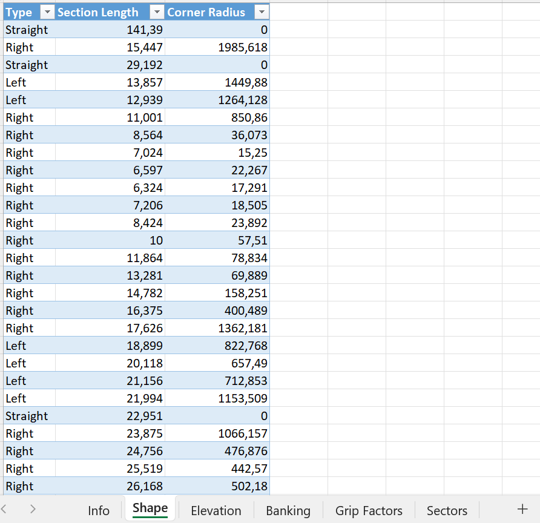
Une fois le code exécuté, on obtient alors une visualisation de la carte de la piste :
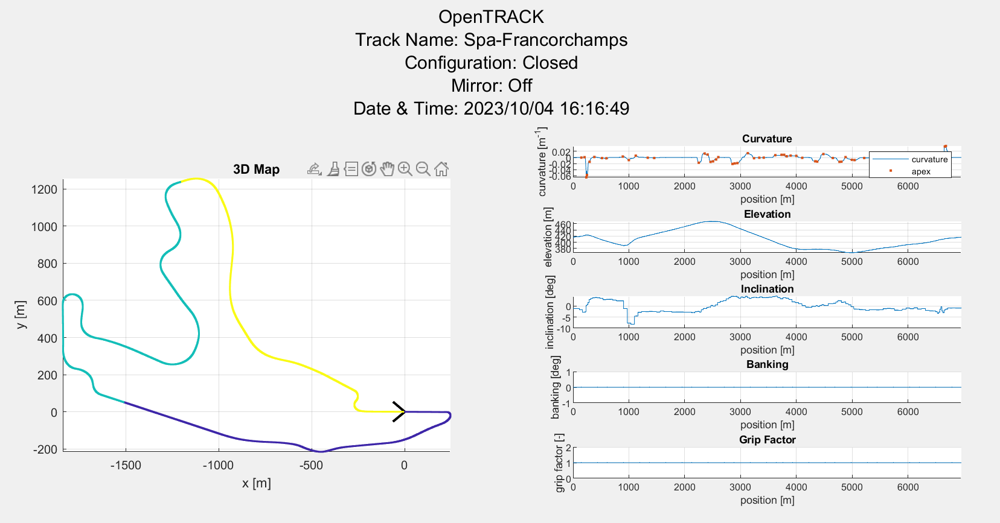
Nous pouvons observer les trois secteurs (respectivement en violet, bleu et jaune). A droite, le programme trace le graphe des courbures du circuit (c'est-à-dire le rayon des virages), l'altitude et l'inclinaison (par rapport au Nord) selon le kilométrage.
Nous ne nous intéresserons pas au banking et facteur d'adhérence dans ce POK.
Cliquez pour afficher le code d'OpenTRACK
Cliquez pour afficher le code d'OpenTRACK
%% OpenLAP Laptime Simulation Project
%
% OpenTRACK
%
% Track model file creation for use in OpenLAP.
%
% This software is licensed under the GPL V3 Open Source License.
%
% Open Source MATLAB project created by:
%
% Michael Halkiopoulos
% Cranfield University Advanced Motorsport MSc Engineer
% National Technical University of Athens MEng Mechanical Engineer
%
% LinkedIn: https://www.linkedin.com/in/michael-halkiopoulos/
% email: halkiopoulos_michalis@hotmail.com
% MATLAB file exchange: https://uk.mathworks.com/matlabcentral/fileexchange/
% GitHub: https://github.com/mc12027
%
% April 2020.
%% Clearing memory
clear
clc
close all force
diary('off')
fclose('all') ;
%% Track file selection
filename = 'Spa-Francorchamps.xlsx' ;
%% Mode selection
% mode = 'logged data' ;
mode = 'shape data' ;
% log_mode = 'speed & yaw' ;
log_mode = 'speed & latacc' ;
%% Settings
% meshing
mesh_size = 1 ; % [m]
% filtering for logged data mode
filter_dt = 0.1 ; % [s]
% track map rotation angle
rotation = 0 ; % [deg]
% track map shape adjuster
lambda = 1 ; % [-]
% long corner adjuster
kappa = 1000 ; % [deg]
%% Reading file
% HUD
disp(['Reading track file: ',filename])
if strcmp(mode,'logged data')
%% from logged data
[head,data] = read_logged_data(filename) ;
info.name = head(2,2) ;
info.country = head(3,2) ;
info.city = head(4,2) ;
info.type = head(5,2) ;
info.config = head(6,2) ;
info.direction = head(7,2) ;
info.mirror = head(8,2) ;
% channels
channels = head(11,:) ;
units = head(12,:) ;
% frequency
freq = str2double(head(9,2)) ;
% data columns
col_dist = 1 ;
col_vel = 2 ;
col_yaw = 3 ;
col_ay = 4 ;
col_el = 5 ;
col_bk = 6 ;
col_gf = 7 ;
col_sc = 8 ;
% extracting data
x = data(:,col_dist) ;
v = data(:,col_vel) ;
w = data(:,col_yaw) ;
ay = data(:,col_ay) ;
el = data(:,col_el) ;
bk = data(:,col_bk) ;
gf = data(:,col_gf) ;
sc = data(:,col_sc) ;
% converting units
if units(col_dist)~="m"
switch units(col_dist) % target is [m]
case 'km'
x = x*1000 ;
case 'miles'
x = x*1609.34 ;
case 'ft'
x = x*0.3048 ;
otherwise
warning('Check distance units.')
end
end
if units(col_vel)~="m/s"
switch units(col_vel) % target is [m/s]
case 'km/h'
v = v/3.6 ;
case 'mph'
v = v*0.44704 ;
otherwise
warning('Check speed units.')
end
end
if units(col_yaw)~="rad/s"
switch units(col_yaw) % target is [rad/s]
case 'deg/s'
w = w*2*pi/360 ;
case 'rpm'
w = w*2*pi/60 ;
case 'rps'
w = w*2*pi ;
otherwise
warning('Check yaw velocity units.')
end
end
if units(col_ay)~="m/s/s"
switch units(col_ay) % target is [m/s2]
case 'G'
ay = ay*9.81 ;
case 'ft/s/s'
ay = ay*0.3048 ;
otherwise
warning('Check lateral acceleration units.')
end
end
if units(col_el)~="m"
switch units(col_el) % target is [m]
case 'km'
el = el*1000 ;
case 'miles'
el = el*1609.34 ;
case 'ft'
el = el*0.3048 ;
otherwise
warning('Check elevation units.')
end
end
if units(col_bk)~="deg"
switch units(col_bk) % target is [m]
case 'rad'
bk = bk/2/pi*360 ;
otherwise
warning('Check banking units.')
end
end
else
%% from shape data
[info] = read_info(filename,'info') ;
table_shape = read_shape_data(filename,'Shape') ;
table_el = read_data(filename,'Elevation') ;
table_bk = read_data(filename,'Banking') ;
table_gf = read_data(filename,'Grip Factors') ;
table_sc = read_data(filename,'Sectors') ;
end
%% Track model name
[folder_status,folder_msg] = mkdir('OpenTRACK Tracks') ;
trackname = "OpenTRACK Tracks/OpenTRACK_"+info.name+"_"+info.config+"_"+info.direction ;
if strcmp(info.mirror,"On")
trackname = trackname+"_Mirrored" ;
end
%% HUD
delete(trackname+".log") ;
diary(trackname+".log") ;
disp([...
'_______ ____________________________________ __';...
'__ __ \______________________ __/__ __ \__ |_ ____/__ //_/';...
'_ / / /__ __ \ _ \_ __ \_ / __ /_/ /_ /| | / __ ,< ';...
'/ /_/ /__ /_/ / __/ / / / / _ _, _/_ ___ / /___ _ /| | ';...
'\____/ _ .___/\___//_/ /_//_/ /_/ |_| /_/ |_\____/ /_/ |_| ';...
' /_/ '...
]) ;
disp('==================================================================')
disp(filename)
disp('File read successfully')
disp('==================================================================')
disp("Name: "+info.name)
disp("City: "+info.city)
disp("Country: "+info.country)
disp("Type: "+info.type)
disp("Configuration: "+info.config)
disp("Direction: "+info.direction)
disp("Mirror: "+info.mirror)
disp("Date: "+datestr(now,'dd/mm/yyyy'))
disp("Time: "+datestr(now,'HH:MM:SS'))
disp('==================================================================')
disp('Track generation started.')
%% Pre-processing
if strcmp(mode,'logged data') % logged data
% getting unique points
[x,rows_to_keep,~] = unique(x) ;
v = smooth(v(rows_to_keep),round(freq*filter_dt)) ;
w = smooth(w(rows_to_keep),round(freq*filter_dt)) ;
ay = smooth(ay(rows_to_keep),round(freq*filter_dt)) ;
el = smooth(el(rows_to_keep),round(freq*filter_dt)) ;
bk = smooth(bk(rows_to_keep),round(freq*filter_dt)) ;
gf = gf(rows_to_keep) ;
sc = sc(rows_to_keep) ;
% shifting position vector for 0 value at start
x = x-x(1) ;
% curvature
switch log_mode
case 'speed & yaw'
r = lambda*w./v ;
case 'speed & latacc'
r = lambda*ay./v.^2 ;
end
r = smooth(r,round(freq*filter_dt)) ;
% mirroring if needed
if strcmp(info.mirror,'On')
r = -r ;
end
% track length
L = x(end) ;
% saving coarse position vectors
xx = x ;
xe = x ;
xb = x ;
xg = x ;
xs = x ;
else % shape data
% turning radius
R = table2array(table_shape(:,3)) ;
% segment length
l = table2array(table_shape(:,2)) ;
% segment type
type_tmp = table2array(table_shape(:,1)) ;
% correcting straight segment radius
R(R==0) = inf ;
% total length
L = sum(l) ;
% segment type variable conversion to number
type = zeros(length(l),1) ;
type(string(type_tmp)=="Straight") = 0 ;
type(string(type_tmp)=="Left") = 1 ;
type(string(type_tmp)=="Right") = -1 ;
if strcmp(info.mirror,'On')
type = -type ;
end
% removing segments with zero length
R(l==0) = [] ;
type(l==0) = [] ;
l(l==0) = [] ;
% injecting points at long corners
angle_seg = rad2deg(l./R) ;
j = 1 ; % index
RR = R ; % new vector containing injected points
ll = l ; % new vector containing injected points
tt = type ; % new vector containing injected points
for i=1:length(l)
if angle_seg(i)>kappa
l_inj = min([ll(j)/3,deg2rad(kappa)*R(i)]) ;
ll = [...
ll(1:j-1);...
l_inj;...
ll(j)-2*l_inj;...
l_inj;...
ll(j+1:end)...
] ;
RR = [...
RR(1:j-1);...
RR(j);...
RR(j);...
RR(j);...
RR(j+1:end)...
] ;
tt = [...
tt(1:j-1);...
tt(j);...
tt(j);...
tt(j);...
tt(j+1:end)...
] ;
j = j+3 ;
else
j = j+1 ;
end
end
R = RR ;
l = ll ;
type = tt ;
% replacing consecutive straights
for i=1:length(l)-1
j = 1 ;
while true
if type(i+j)==0 && type(i)==0 && l(i)~=-1
l(i) = l(i)+l(i+j) ;
l(i+j) = -1 ;
else
break
end
j = j+1 ;
end
end
R(l==-1) = [] ;
type(l==-1) = [] ;
l(l==-1) = [] ;
% final segment point calculation
X = cumsum(l) ; % end position of each segment
XC = cumsum(l)-l/2 ; % center position of each segment
j = 1 ; % index
x = zeros(length(X)+sum(R==inf),1) ; % preallocation
r = zeros(length(X)+sum(R==inf),1) ; % preallocation
for i=1:length(X)
if R(i)==inf % end of straight point injection
x(j) = X(i)-l(i) ;
x(j+1) = X(i) ;
j = j+2 ;
else % circular segment center
x(j) = XC(i) ;
r(j) = type(i)./R(i) ;
j = j+1 ;
end
end
% getting data from tables and ignoring points with x>L
el = table2array(table_el) ;
el(el(:,1)>L,:) = [] ;
bk = table2array(table_bk) ;
bk(bk(:,1)>L,:) = [] ;
gf = table2array(table_gf) ;
gf(gf(:,1)>L,:) = [] ;
sc = table2array(table_sc) ;
sc(sc(:,1)>=L,:) = [] ;
sc = [sc;[L,sc(end,end)]] ;
% saving coarse position vectors
xx = x ;
xe = el(:,1) ;
xb = bk(:,1) ;
xg = gf(:,1) ;
xs = sc(:,1) ;
% saving coarse topology
el = el(:,2) ;
bk = bk(:,2) ;
gf = gf(:,2) ;
sc = sc(:,2) ;
end
% HUD
disp('Pre-processing completed.')
%% Meshing
% new fine position vector
if floor(L)<L % check for injecting last point
x = [(0:mesh_size:floor(L))';L] ;
else
x = (0:mesh_size:floor(L))' ;
end
% distance step vector
dx = diff(x) ;
dx = [dx;dx(end)] ;
% number of mesh points
n = length(x) ;
% fine curvature vector
r = interp1(xx,r,x,'pchip','extrap') ;
% elevation
Z = interp1(xe,el,x,'linear','extrap') ;
% banking
bank = interp1(xb,bk,x,'linear','extrap') ;
% inclination
incl = -atand((diff(Z)./diff(x))) ;
incl = [incl;incl(end)] ;
% grip factor
factor_grip = interp1(xg,gf,x,'linear','extrap') ;
% sector
sector = interp1(xs,sc,x,'previous','extrap') ;
% HUD
disp("Fine meshing completed with mesh size: "+num2str(mesh_size)+" [m]")
%% Map generation
% coordinate vector preallocation
X = zeros(n,1) ;
Y = zeros(n,1) ;
% segment angles
angle_seg = rad2deg(dx.*r) ;
% heading angles
angle_head = cumsum(angle_seg) ;
if strcmp(info.config,'Closed') % tangency correction for closed track
dh = [...
mod(angle_head(end),sign(angle_head(end))*360);...
angle_head(end)-sign(angle_head(end))*360....
] ;
[~,idx] = min(abs(dh)) ;
dh = dh(idx) ;
angle_head = angle_head-x/L*dh ;
angle_seg = [angle_head(1);diff(angle_head)] ;
end
angle_head = angle_head-angle_head(1) ;
% map generation
for i=2:n
% previous point
p = [X(i-1);Y(i-1);0] ;
% next point
xyz = rotz(angle_head(i-1))*[dx(i-1);0;0]+p ;
% saving point coordinates of next point
X(i) = xyz(1) ;
Y(i) = xyz(2) ;
end
%% Apexes
% finding Apexes
[~,apex] = findpeaks(abs(r)) ;
% correcting corner type
r_apex = r(apex) ;
% HUD
disp('Apex calculation completed.')
%% Map edit
% track direction
if strcmp(info.direction,'Backward')
x = x(end)-flipud(x) ;
r = -flipud(r) ;
apex = length(x)-flipud(apex) ;
r_apex = -flipud(r_apex) ;
incl = -flipud(incl) ;
bank = -flipud(bank) ;
factor_frip = flipud(factor_grip) ;
sector = flipud(sector) ;
X = flipud(X) ;
Y = flipud(Y) ;
Z = flipud(Z) ;
end
% track rotation
% rotating track map
xyz = rotz(rotation)*[X';Y';Z'] ;
X = xyz(1,:)' ;
Y = xyz(2,:)' ;
Z = xyz(3,:)' ;
% HUD
disp('Track rotated.')
% closing map if necessary
if strcmp(info.config,'Closed') % closed track
% HUD
disp('Closing fine mesh map.')
% linear correction vectors
DX = x/L*(X(1)-X(end)) ;
DY = x/L*(Y(1)-Y(end)) ;
DZ = x/L*(Z(1)-Z(end)) ;
db = x/L*(bank(1)-bank(end)) ;
% adding correction
X = X+DX ;
Y = Y+DY ;
Z = Z+DZ ;
bank = bank+db ;
% recalculating inclination
incl = -atand((diff(Z)./diff(x))) ;
incl = [incl;(incl(end-1)+incl(1))/2] ;
% HUD
disp('Fine mesh map closed.')
end
% smoothing track inclination
incl = smooth(incl) ;
% HUD
disp('Fine mesh map created.')
%% Plotting Results
% finish line arrow
% settings
factor_scale = 25 ;
half_angle = 40 ;
% scaling
scale = max([max(X)-min(X);max(Y)-min(Y)])/factor_scale ;
% nondimentional vector from point 2 to point 1
arrow_n = [X(1)-X(2);Y(1)-Y(2);Z(1)-Z(2)]/norm([X(1)-X(2);Y(1)-Y(2);Z(1)-Z(2)]) ;
% first arrow point
arrow_1 = scale*rotz(half_angle)*arrow_n+[X(1);Y(1);Z(1)] ;
% mid arrow point
arrow_c = [X(1);Y(1);Z(1)] ;
% second arrow point
arrow_2 = scale*rotz(-half_angle)*arrow_n+[X(1);Y(1);Z(1)] ;
% arrow vector components
arrow_x = [arrow_1(1);arrow_c(1);arrow_2(1)] ;
arrow_y = [arrow_1(2);arrow_c(2);arrow_2(2)] ;
arrow_z = [arrow_1(3);arrow_c(3);arrow_2(3)] ;
% final arrow matrix
arrow = [arrow_x,arrow_y,arrow_z] ;
% figure
set(0,'units','pixels') ;
SS = get(0,'screensize') ;
H = 900-90 ;
W = 900 ;
Xpos = floor((SS(3)-W)/2) ;
Ypos = floor((SS(4)-H)/2) ;
f = figure('Name',filename,'Position',[Xpos,Ypos,W,H]) ;
figtitle = ["OpenTRACK","Track Name: "+info.name,"Configuration: "+info.config,"Mirror: "+info.mirror,"Date & Time: "+datestr(now,'yyyy/mm/dd')+" "+datestr(now,'HH:MM:SS')] ;
figtitle = strrep(figtitle,"_"," ") ;
sgtitle(figtitle)
% rows and columns
rows = 5 ;
cols = 2 ;
% 3d map
subplot(rows,cols,[1,3,5,7,9])
title('3D Map')
hold on
grid on
axis equal
axis tight
xlabel('x [m]')
ylabel('y [m]')
scatter3(X,Y,Z,20,sector,'.')
plot3(arrow_x,arrow_y,arrow_z,'k','LineWidth',2)
% curvature
subplot(rows,cols,2)
title('Curvature')
hold on
grid on
xlabel('position [m]')
ylabel('curvature [m^-^1]')
plot(x,r)
scatter(x(apex),r_apex,'.')
xlim([x(1),x(end)])
legend({'curvature','apex'})
% elevation
subplot(rows,cols,4)
title('Elevation')
hold on
grid on
xlabel('position [m]')
ylabel('elevation [m]')
plot(x,Z)
xlim([x(1),x(end)])
% inclination
subplot(rows,cols,6)
title('Inclination')
hold on
grid on
xlabel('position [m]')
ylabel('inclination [deg]')
plot(x,incl)
xlim([x(1),x(end)])
% banking
subplot(rows,cols,8)
title('Banking')
hold on
grid on
xlabel('position [m]')
ylabel('banking [deg]')
plot(x,bank)
xlim([x(1),x(end)])
% grip factors
subplot(rows,cols,10)
title('Grip Factor')
hold on
grid on
xlabel('position [m]')
ylabel('grip factor [-]')
plot(x,factor_grip)
xlim([x(1),x(end)])
% saving plot
savefig(f,trackname+".fig")
% HUD
disp('Plots created and saved.')
%% Saving circuit
% saving
save(trackname+".mat",'info','x','dx','n','r','bank','incl','factor_grip','sector','r_apex','apex','X','Y','Z','arrow')
% HUD
disp('Track generated successfully.')
%% ASCII map
charh = 15 ; % font height [pixels]
charw = 8 ; % font width [pixels]
linew = 66 ; % log file character width
mapw = max(X)-min(X) ; % map width
YY = round(Y/(charh/charw)/mapw*linew) ; % scales y values
XX = round(X/mapw*linew) ; % scales x values
YY = -YY-min(-YY) ; % flipping y and shifting to positive space
XX = XX-min(XX) ; % shifting x to positive space
p = unique([XX,YY],'rows') ; % getting unique points
XX = p(:,1)+1 ; % saving x
YY = p(:,2)+1 ; % saving y
maph = max(YY) ; % getting new map height [lines]
mapw = max(XX) ; % getting new map width [columns]
map = char(maph,mapw) ; % character map preallocation
% looping through characters
for i=1:maph
for j=1:mapw
check = [XX,YY]==[j,i] ; % checking if pixel is on
check = check(:,1).*check(:,2) ; % combining truth table
if max(check)
map(i,j) = 'o' ; % pixel is on
else
map(i,j) = ' ' ; % pixel is off
end
end
end
disp('Map:')
disp(map)
% diary
diary('off') ;
%% Functions
%%%%%%%%%%%%%%%%%%%%%%%%%%%%%%%%%%%%%%%%%%%%%%%%%%%%%%%%%%%%%%%%%%%%%%%%%%%
function [info] = read_info(workbookFile,sheetName,startRow,endRow)
% Input handling
% If no sheet is specified, read first sheet
if nargin == 1 || isempty(sheetName)
sheetName = 1;
end
% If row start and end points are not specified, define defaults
if nargin <= 3
startRow = 1;
endRow = 7;
end
% Setup the Import Options
opts = spreadsheetImportOptions("NumVariables", 2);
% Specify sheet and range
opts.Sheet = sheetName;
opts.DataRange = "A" + startRow(1) + ":B" + endRow(1);
% Specify column names and types
opts.VariableNames = ["info", "data"];
opts.VariableTypes = ["string", "string"];
opts = setvaropts(opts, [1, 2], "WhitespaceRule", "preserve");
opts = setvaropts(opts, [1, 2], "EmptyFieldRule", "auto");
% Import the data
tbl = readtable(workbookFile, opts, "UseExcel", false);
for idx = 2:length(startRow)
opts.DataRange = "A" + startRow(idx) + ":B" + endRow(idx);
tb = readtable(workbookFile, opts, "UseExcel", false);
tbl = [tbl; tb]; %#ok<AGROW>
end
% Convert to output type
data = tbl.data ;
info.name = data(1) ;
info.country = data(2) ;
info.city = data(3) ;
info.type = data(4) ;
info.config = data(5) ;
info.direction = data(6) ;
info.mirror = data(7) ;
end
%%%%%%%%%%%%%%%%%%%%%%%%%%%%%%%%%%%%%%%%%%%%%%%%%%%%%%%%%%%%%%%%%%%%%%%%%%%
function [tbl] = read_shape_data(workbookFile,sheetName,startRow,endRow)
% Input handling
% If no sheet is specified, read first sheet
if nargin == 1 || isempty(sheetName)
sheetName = 1;
end
% If row start and end points are not specified, define defaults
if nargin <= 3
startRow = 2;
endRow = 10000;
end
% Setup the Import Options
opts = spreadsheetImportOptions("NumVariables", 3);
% Specify sheet and range
opts.Sheet = sheetName;
opts.DataRange = "A" + startRow(1) + ":C" + endRow(1);
% Specify column names and types
opts.VariableNames = ["Type", "SectionLength", "CornerRadius"];
opts.VariableTypes = ["categorical", "double", "double"];
opts = setvaropts(opts, 1, "EmptyFieldRule", "auto");
% Setup rules for import
opts.MissingRule = "omitrow";
opts = setvaropts(opts, [2, 3], "TreatAsMissing", '');
% Import the data
tbl = readtable(workbookFile, opts, "UseExcel", false);
for idx = 2:length(startRow)
opts.DataRange = "A" + startRow(idx) + ":C" + endRow(idx);
tb = readtable(workbookFile, opts, "UseExcel", false);
tbl = [tbl; tb]; %#ok<AGROW>
end
end
%%%%%%%%%%%%%%%%%%%%%%%%%%%%%%%%%%%%%%%%%%%%%%%%%%%%%%%%%%%%%%%%%%%%%%%%%%%
function [data] = read_data(workbookFile,sheetName,startRow,endRow)
% Input handling
% If no sheet is specified, read first sheet
if nargin == 1 || isempty(sheetName)
sheetName = 1;
end
% If row start and end points are not specified, define defaults
if nargin <= 3
startRow = 2;
endRow = 10000;
end
% Setup the Import Options
opts = spreadsheetImportOptions("NumVariables", 2);
% Specify sheet and range
opts.Sheet = sheetName;
opts.DataRange = "A" + startRow(1) + ":B" + endRow(1);
% Specify column names and types
opts.VariableNames = ["Point", "Data"];
opts.VariableTypes = ["double", "double"];
% Setup rules for import
opts.MissingRule = "omitrow";
opts = setvaropts(opts, [1, 2], "TreatAsMissing", '');
% Import the data
data = readtable(workbookFile, opts, "UseExcel", false);
for idx = 2:length(startRow)
opts.DataRange = "A" + startRow(idx) + ":B" + endRow(idx);
tb = readtable(workbookFile, opts, "UseExcel", false);
data = [data; tb]; %#ok<AGROW>
end
end
%%%%%%%%%%%%%%%%%%%%%%%%%%%%%%%%%%%%%%%%%%%%%%%%%%%%%%%%%%%%%%%%%%%%%%%%%%%
function [header,data] = read_logged_data(filename,header_startRow,header_endRow,data_startRow,data_endRow)
% Initialize variables.
delimiter = ',';
if nargin<=2
header_startRow = 1 ;
header_endRow = 12 ;
data_startRow = 14 ;
data_endRow = inf ;
end
% Open the text file.
fileID = fopen(filename,'r');
% Header array
% Format for each line of text:
header_formatSpec = '%s%s%s%s%s%s%s%s%s%s%s%[^\n\r]';
% Read columns of data according to the format.
headerArray = textscan(fileID, header_formatSpec, header_endRow(1)-header_startRow(1)+1, 'Delimiter', delimiter, 'TextType', 'string', 'HeaderLines', header_startRow(1)-1, 'ReturnOnError', false, 'EndOfLine', '\r\n');
for block=2:length(header_startRow)
frewind(fileID);
dataArrayBlock = textscan(fileID, header_formatSpec, header_endRow(block)-header_startRow(block)+1, 'Delimiter', delimiter, 'TextType', 'string', 'HeaderLines', header_startRow(block)-1, 'ReturnOnError', false, 'EndOfLine', '\r\n');
for col=1:length(headerArray)
headerArray{col} = [headerArray{col};dataArrayBlock{col}];
end
end
% Create output variable
header = [headerArray{1:end-1}];
% Data array
% Pointer to start of file
fseek(fileID,0,'bof') ;
% Format for each line of text:
data_formatSpec = '%f%f%f%f%f%f%f%f%f%f%f%[^\n\r]';
% Read columns of data according to the format.
dataArray = textscan(fileID, data_formatSpec, data_endRow(1)-data_startRow(1)+1, 'Delimiter', delimiter, 'TextType', 'string', 'HeaderLines', data_startRow(1)-1, 'ReturnOnError', false, 'EndOfLine', '\r\n');
for block=2:length(data_startRow)
frewind(fileID);
dataArrayBlock = textscan(fileID, data_formatSpec, data_endRow(block)-data_startRow(block)+1, 'Delimiter', delimiter, 'TextType', 'string', 'HeaderLines', data_startRow(block)-1, 'ReturnOnError', false, 'EndOfLine', '\r\n');
for col=1:length(dataArray)
dataArray{col} = [dataArray{col};dataArrayBlock{col}];
end
end
% Create output variable
data = [dataArray{1:end-1}];
% Close the text file.
fclose(fileID);
end
OpenDRAG
Le but de cette partie est de simuler le comportement de notre modélisation effectuée plus tôt sur une ligne droite. Je souhaite obtenir le temps nécessaire à notre modèle pour atteindre certaines vitesses (100 km/h, 200 km/h et 300 km/h), ainsi que la vitesse atteignable sur 1 km.
Nous obtenons les résultats suivants :
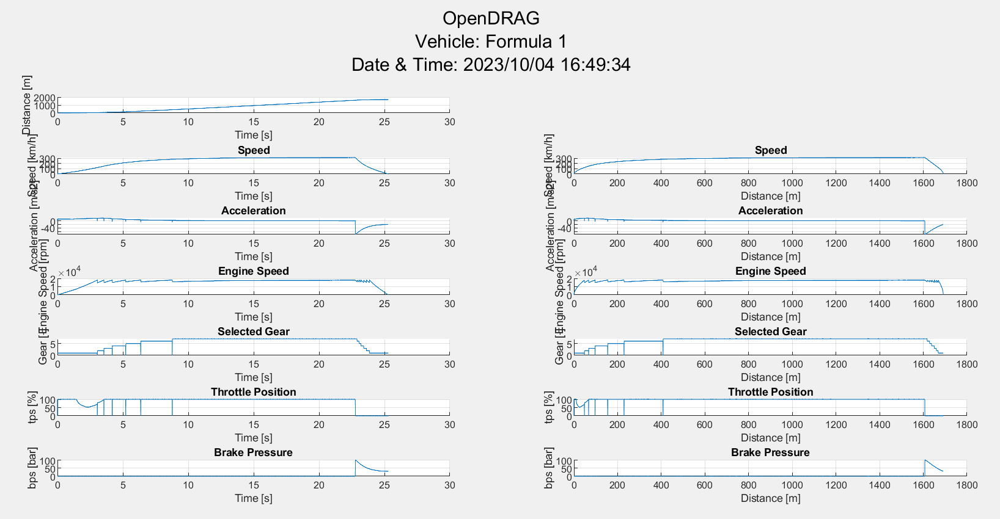
Petite compilation des résultats :
- 16 s pour parcourir 1000 m
- 2,56 s pour atteindre la vitesse de 100 km/h
- 4,65 s pour atteindre la vitesse de 200 km/h
- 11,4 s pour atteindre la vitesse de 300 km/h
- 316,27 km/h atteints à une distance de 1600 m
Cliquez pour afficher le code d'OpenDRAG
Cliquez pour afficher le code d'OpenDRAG
%% OpenLAP Laptime Simulation Project
%
% OpenDRAG
%
% Straight line acceleration and braking simulation using a simple point
% mass model for a racing vehicle.
% Instructions:
% 1) Select a vehicle file created by OpenVEHICLE by assigning the full
% path to the variable "vehiclefile".
% 2) Run the script.
% 3) The results will appear on the command window and inside the folder
% "OpenDRAG Sims". You can choose to include the date and time of each
% simulation in the result file name by changing the
% "use_date_time_in_name" variable to true.
%
% More information can be found in the "OpenLAP Laptime Simulator"
% videos on YouTube.
%
% This software is licensed under the GPL V3 Open Source License.
%
% Open Source MATLAB project created by:
%
% Michael Halkiopoulos
% Cranfield University Advanced Motorsport MSc Engineer
% National Technical University of Athens MEng Mechanical Engineer
%
% LinkedIn: https://www.linkedin.com/in/michael-halkiopoulos/
% email: halkiopoulos_michalis@hotmail.com
% MATLAB file exchange: https://uk.mathworks.com/matlabcentral/fileexchange/
% GitHub: https://github.com/mc12027
%
% April 2020.
%% Clearing memory
clear
clc
close all force
diary('off')
fclose('all') ;
%% Timer start
% total timer start
total_timer = tic ;
%% Loading vehicle
% filename
vehiclefile = 'OpenVEHICLE Vehicles/MaFormule1.mat' ;
%% Simulation settings
% date and time in simulation name
use_date_time_in_name = false ;
% time step
dt = 1E-3 ;
% maximum simulation time for memory preallocation
t_max = 60 ;
% acceleration sensitivity for drag limitation
ax_sens = 0.05 ; % [m/s2]
% speed traps
speed_trap = [50;100;150;200;250;300;350]/3.6 ;
% track data
bank = 0 ;
incl = 0 ;
%% Vehicle data preprocessing
% loading file
veh = load(vehiclefile) ;
% mass
M = veh.M ;
% gravity constant
g = 9.81 ;
% longitudinal tyre coefficients
dmx = veh.factor_grip*veh.sens_x ;
mux = veh.factor_grip*veh.mu_x ;
Nx = veh.mu_x_M*g ;
% normal load on all wheels
Wz = M*g*cosd(bank)*cosd(incl) ;
% induced weight from banking and inclination
Wy = M*g*sind(bank) ;
Wx = M*g*sind(incl) ;
% ratios
rf = veh.ratio_final ;
rg = veh.ratio_gearbox ;
rp = veh.ratio_primary ;
% tyre radius
Rt = veh.tyre_radius ;
% drivetrain efficiency
np = veh.n_primary ;
ng = veh.n_gearbox ;
nf = veh.n_final ;
% engine curves
rpm_curve = [0;veh.en_speed_curve] ;
torque_curve = veh.factor_power*[veh.en_torque_curve(1);veh.en_torque_curve] ;
% shift points
shift_points = table2array(veh.shifting(:,1)) ;
shift_points = [shift_points;veh.en_speed_curve(end)] ;
%% Acceleration preprocessing
% memory preallocation
N = t_max/dt ;
T = -ones(N,1) ;
X = -ones(N,1) ;
V = -ones(N,1) ;
A = -ones(N,1) ;
RPM = -ones(N,1) ;
TPS = -ones(N,1) ;
BPS = -ones(N,1) ;
GEAR = -ones(N,1) ;
MODE = -ones(N,1) ;
% initial time
t = 0 ;
t_start = 0 ;
% initial distance
x = 0 ;
x_start = 0 ;
% initial velocity
v = 0 ;
% initial accelerartion
a = 0 ;
% initial gears
gear = 1 ;
gear_prev = 1 ;
% shifting condition
shifting = false ;
% initial rpm
rpm = 0 ;
% initial tps
tps = 0 ;
% initial bps
bps = 0 ;
% initial trap number
trap_number = 1 ;
% speed trap checking condition
check_speed_traps = true ;
% iteration number
i = 1 ;
%% HUD display
% folder
[folder_status,folder_msg] = mkdir('OpenDRAG Sims') ;
% diary
if use_date_time_in_name
date_time = "_"+datestr(now,'yyyy_mm_dd')+"_"+datestr(now,'HH_MM_SS') ; %#ok<UNRCH>
else
date_time = "" ;
end
simname = "OpenDRAG Sims/OpenDRAG_"+veh.name+date_time ;
delete(simname+".log") ;
diary(simname+".log") ;
% HUD
disp([...
' _______ ________________________________';...
' __ __ \______________________ __ \__ __ \__ |_ ____/';...
' _ / / /__ __ \ _ \_ __ \_ / / /_ /_/ /_ /| | / __ ';...
' / /_/ /__ /_/ / __/ / / / /_/ /_ _, _/_ ___ / /_/ / ';...
' \____/ _ .___/\___//_/ /_//_____/ /_/ |_| /_/ |_\____/ ';...
' /_/ '...
]) ;
disp('=======================================================================================')
disp(['Vehicle: ',char(veh.name)])
disp("Date: "+datestr(now,'dd/mm/yyyy'))
disp("Time: "+datestr(now,'HH:MM:SS'))
disp('=======================================================================================')
disp('Acceleration simulation started:')
disp(['Initial Speed: ',num2str(v*3.6),' km/h'])
disp('|_______Comment________|_Speed_|_Accel_|_EnRPM_|_Gear__|_Tabs__|_Xabs__|_Trel__|_Xrel_|')
disp('|______________________|[km/h]_|__[G]__|_[rpm]_|__[#]__|__[s]__|__[m]__|__[s]__|_[m]__|')
%% Acceleration
% acceleration timer start
acceleration_timer = tic ;
while true
% saving values
MODE(i) = 1 ;
T(i) = t ;
X(i) = x ;
V(i) = v ;
A(i) = a ;
RPM(i) = rpm ;
TPS(i) = tps ;
BPS(i) = 0 ;
GEAR(i) = gear ;
% checking if rpm limiter is on or if out of memory
if v>=veh.v_max
% HUD
fprintf('Engine speed limited\t')
hud(v,a,rpm,gear,t,x,t_start,x_start)
break
elseif i==N
% HUD
disp(['Did not reach maximum speed at time ',num2str(t),' s'])
break
end
% check if drag limited
if tps==1 && ax+ax_drag<=ax_sens
% HUD
fprintf('Drag limited \t')
hud(v,a,rpm,gear,t,x,t_start,x_start)
break
end
% checking speed trap
if check_speed_traps
% checking if current speed is above trap speed
if v>=speed_trap(trap_number)
fprintf('%s%3d %3d%s ','Speed Trap #',trap_number,round(speed_trap(trap_number)*3.6),'km/h')
hud(v,a,rpm,gear,t,x,t_start,x_start)
% next speed trap
trap_number = trap_number+1 ;
% checking if speed traps are completed
if trap_number>length(speed_trap)
check_speed_traps = false ;
end
end
end
% aero forces
Aero_Df = 1/2*veh.rho*veh.factor_Cl*veh.Cl*veh.A*v^2 ;
Aero_Dr = 1/2*veh.rho*veh.factor_Cd*veh.Cd*veh.A*v^2 ;
% rolling resistance
Roll_Dr = veh.Cr*(-Aero_Df+Wz) ;
% normal load on driven wheels
Wd = (veh.factor_drive*Wz+(-veh.factor_aero*Aero_Df))/veh.driven_wheels ;
% drag acceleration
ax_drag = (Aero_Dr+Roll_Dr+Wx)/M ;
% rpm calculation
if gear==0 % shifting gears
rpm = rf*rg(gear_prev)*rp*v/Rt*60/2/pi ;
rpm_shift = shift_points(gear_prev) ;
else % gear change finished
rpm = rf*rg(gear)*rp*v/Rt*60/2/pi ;
rpm_shift = shift_points(gear) ;
end
% checking for gearshifts
if rpm>=rpm_shift && ~shifting % need to change gears
if gear==veh.nog % maximum gear number
% HUD
fprintf('Engine speed limited\t')
hud(v,a,rpm,gear,t,x,t_start,x_start)
break
else % higher gear available
% shifting condition
shifting = true ;
% shift initialisation time
t_shift = t ;
% zeroing engine acceleration
ax = 0 ;
% saving previous gear
gear_prev = gear ;
% setting gear to neutral for duration of gearshift
gear = 0 ;
end
elseif shifting % currently shifting gears
% zeroing engine acceleration
ax = 0 ;
% checking if gearshift duration has passed
if t-t_shift>veh.shift_time
% HUD
fprintf('%s%2d\t','Shifting to gear #',gear_prev+1)
hud(v,a,rpm,gear_prev+1,t,x,t_start,x_start)
% shifting condition
shifting = false ;
% next gear
gear = gear_prev+1 ;
end
else % no gearshift
% max long acc available from tyres
ax_tyre_max_acc = 1/M*(mux+dmx*(Nx-Wd))*Wd*veh.driven_wheels ;
% getting power limit from engine
engine_torque = interp1(rpm_curve,torque_curve,rpm) ;
wheel_torque = engine_torque*rf*rg(gear)*rp*nf*ng*np ;
ax_power_limit = 1/M*wheel_torque/Rt ;
% final long acc
ax = min([ax_power_limit,ax_tyre_max_acc]) ;
end
% tps
tps = ax/ax_power_limit ;
% longitudinal acceleration
a = ax+ax_drag ;
% new position
x = x+v*dt+1/2*a*dt^2 ;
% new velocity
v = v+a*dt ;
% new time
t = t+dt ;
% next iteration
i = i+1 ;
end
i_acc = i ; % saving acceleration index
% average acceleration
a_acc_ave = v/t ;
disp(['Average acceleration: ',num2str(a_acc_ave/9.81,'%6.3f'),' [G]'])
disp(['Peak acceleration : ',num2str(max(A)/9.81,'%6.3f'),' [G]'])
% acceleration timer
toc(acceleration_timer)
%% Deceleration preprocessing
% deceleration timer start
deceleration_timer = tic ;
% saving time and position of braking start
t_start = t ;
x_start = x ;
% speed trap condition
check_speed_traps = true ;
% active braking speed traps
speed_trap_decel = speed_trap(speed_trap<=v) ;
trap_number = length(speed_trap_decel) ;
%% HUD display
disp('===============================================================================')
disp('Deceleration simulation started:')
disp(['Initial Speed: ',num2str(v*3.6),' [km/h]'])
disp('|_______Comment________|_Speed_|_Accel_|_EnRPM_|_Gear__|_Tabs__|_Xabs__|_Trel__|_Xrel_|')
disp('|______________________|[km/h]_|__[G]__|_[rpm]_|__[#]__|__[s]__|__[m]__|__[s]__|_[m]__|')
%% Deceleration
while true
% saving values
MODE(i) = 2 ;
T(i) = t ;
X(i) = x ;
V(i) = v ;
A(i) = a ;
RPM(i) = rpm ;
TPS(i) = 0 ;
BPS(i) = bps ;
GEAR(i) = gear ;
% checking if stopped or if out of memory
if v<=0
% zeroing speed
v = 0 ;
% HUD
fprintf('Stopped \t')
hud(v,a,rpm,gear,t,x,t_start,x_start)
break
elseif i==N
% HUD
disp(['Did not stop at time ',num2str(t),' s'])
break
end
% checking speed trap
if check_speed_traps
% checking if current speed is under trap speed
if v<=speed_trap_decel(trap_number)
% HUD
fprintf('%s%3d %3d%s ','Speed Trap #',trap_number,round(speed_trap(trap_number)*3.6),'km/h')
hud(v,a,rpm,gear,t,x,t_start,x_start)
% next speed trap
trap_number = trap_number-1 ;
% checking if speed traps are completed
if trap_number<1
check_speed_traps = false ;
end
end
end
% aero forces
Aero_Df = 1/2*veh.rho*veh.factor_Cl*veh.Cl*veh.A*v^2 ;
Aero_Dr = 1/2*veh.rho*veh.factor_Cd*veh.Cd*veh.A*v^2 ;
% rolling resistance
Roll_Dr = veh.Cr*(-Aero_Df+Wz) ;
% drag acceleration
ax_drag = (Aero_Dr+Roll_Dr+Wx)/M ;
% gear
gear = interp1(veh.vehicle_speed,veh.gear,v) ;
% rpm
rpm = interp1(veh.vehicle_speed,veh.engine_speed,v) ;
% max long dec available from tyres
ax_tyre_max_dec = -1/M*(mux+dmx*(Nx-(Wz-Aero_Df)/4))*(Wz-Aero_Df) ;
% final long acc
ax = ax_tyre_max_dec ;
% brake pressure
bps = -veh.beta*veh.M*ax ;
% longitudinal acceleration
a = ax+ax_drag ;
% new position
x = x+v*dt+1/2*a*dt^2 ;
% new velocity
v = v+a*dt ;
% new time
t = t+dt ;
% next iteration
i = i+1 ;
end
% average deceleration
a_dec_ave = V(i_acc)/(t-t_start) ;
disp(['Average deceleration: ',num2str(a_dec_ave/9.81,'%6.3f'),' [G]'])
disp(['Peak deceleration : ',num2str(-min(A)/9.81,'%6.3f'),' [G]'])
% deceleration timer
toc(deceleration_timer)
%% End of simulation
disp('===============================================================================')
disp('Simulation completed successfully.')% total timer
toc(total_timer)
%% Results compression
% getting values to delete
to_delete = T==-1 ;
% deleting values
T(to_delete) = [] ;
X(to_delete) = [] ;
V(to_delete) = [] ;
A(to_delete) = [] ;
RPM(to_delete) = [] ;
TPS(to_delete) = [] ;
BPS(to_delete) = [] ;
GEAR(to_delete) = [] ;
MODE(to_delete) = [] ;
%% Saving results
save(simname+".mat")
diary('off') ;
%% Plots
% figure window
set(0,'units','pixels') ;
SS = get(0,'screensize') ;
H = 900-90 ;
W = 900 ;
Xpos = floor((SS(3)-W)/2) ;
Ypos = floor((SS(4)-H)/2) ;
f = figure('Name','OpenDRAG Simulation Results','Position',[Xpos,Ypos,W,H]) ;
figtitle = ["OpenDRAG","Vehicle: "+veh.name,"Date & Time: "+datestr(now,'yyyy/mm/dd')+" "+datestr(now,'HH:MM:SS')] ;
sgtitle(figtitle)
% rows & columns
row = 7 ;
col = 2 ;
% plot number
i = 0 ;
% distance
i = i+1 ;
subplot(row,col,i)
hold on
grid on
% title('Traveled Distance')
xlabel('Time [s]')
ylabel('Distance [m]')
plot(T,X)
i = i+1 ;
% speed
i = i+1 ;
subplot(row,col,i)
hold on
grid on
title('Speed')
xlabel('Time [s]')
ylabel('Speed [km/h]')
plot(T,V*3.6)
i = i+1 ;
subplot(row,col,i)
hold on
grid on
title('Speed')
xlabel('Distance [m]')
ylabel('Speed [km/h]')
plot(X,V*3.6)
% acceleration
i = i+1 ;
subplot(row,col,i)
hold on
grid on
title('Acceleration')
xlabel('Time [s]')
ylabel('Acceleration [m/s2]')
plot(T,A)
i = i+1 ;
subplot(row,col,i)
hold on
grid on
title('Acceleration')
xlabel('Distance [m]')
ylabel('Acceleration [m/s2]')
plot(X,A)
% engine speed
i = i+1 ;
subplot(row,col,i)
hold on
grid on
title('Engine Speed')
xlabel('Time [s]')
ylabel('Engine Speed [rpm]')
plot(T,RPM)
i = i+1 ;
subplot(row,col,i)
hold on
grid on
title('Engine Speed')
xlabel('Distance [m]')
ylabel('Engine Speed [rpm]')
plot(X,RPM)
% gear
i = i+1 ;
subplot(row,col,i)
hold on
grid on
title('Selected Gear')
xlabel('Time [s]')
ylabel('Gear [-]')
plot(T,GEAR)
i = i+1 ;
subplot(row,col,i)
hold on
grid on
title('Selected Gear')
xlabel('Distance [m]')
ylabel('Gear [-]')
plot(X,GEAR)
% throttle
i = i+1 ;
subplot(row,col,i)
hold on
grid on
title('Throttle Position')
xlabel('Time [s]')
ylabel('tps [%]')
plot(T,TPS*100)
i = i+1 ;
subplot(row,col,i)
hold on
grid on
title('Throttle Position')
xlabel('Distance [m]')
ylabel('tps [%]')
plot(X,TPS*100)
% brake
i = i+1 ;
subplot(row,col,i)
hold on
grid on
title('Brake Pressure')
xlabel('Time [s]')
ylabel('bps [bar]')
plot(T,BPS/10^5)
i = i+1 ;
subplot(row,col,i)
hold on
grid on
title('Brake Pressure')
xlabel('Distance [m]')
ylabel('bps [bar]')
plot(X,BPS/10^5)
savefig(f,simname+".fig")
%% HUD function
%%%%%%%%%%%%%%%%%%%%%%%%%%%%%%%%%%%%%%%%%%%%%%%%%%%%%%%%%%%%%%%%%%%%%%%%%%%
function [] = hud(v,a,rpm,gear,t,x,t_start,x_start)
% disp([' Speed : ',num2str(v*3.6),' km/h'])
% disp([' Acceleration : ',num2str(g/9.81),' G'])
% disp([' RPM : ',num2str(rpm)])
% disp([' Gear : ',num2str(gear)])
% disp([' Time : ',num2str(t-t_start),' s'])
% disp([' Distance : ',num2str(x-x_start),' m'])
% disp([' Total Time : ',num2str(t),' s'])
% disp([' Total Distance: ',num2str(x),' m'])
fprintf('%7.2f\t%7.2f\t%7d\t%7d\t%7.2f\t%7.2f\t%7.2f\t%7.2f\n',v*3.6,a/9.81,round(rpm),gear,t,x,t-t_start,x-x_start) ;
end
OpenLAP
Annexe
Annexe 1
Modélisation physique du problème :
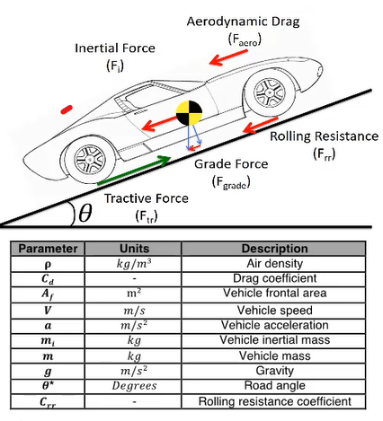
Source : Mathworks.
Annexe 2
Voici les équations qui régissent le mouvement de la monoplace dans la partie 3 :
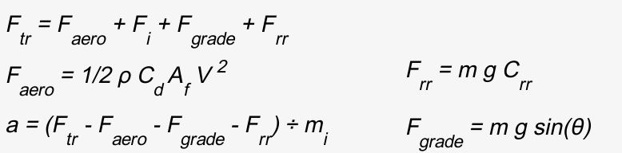
Source : Zongxuan Sun, Guoming G. Zhu, Design and Control of Automotive Propulsion Systems, e-Book.
Annexe 3
Voici le détail du bloc Monoplace dans la partie 3 :
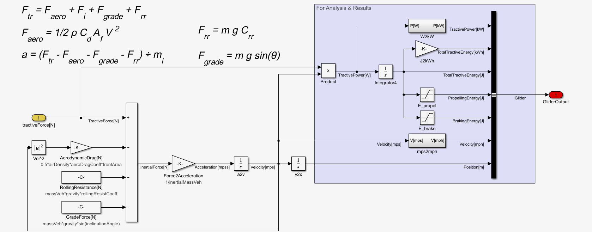
Annexe 4
Voici le détail du bloc Pilote dans la partie 3 :
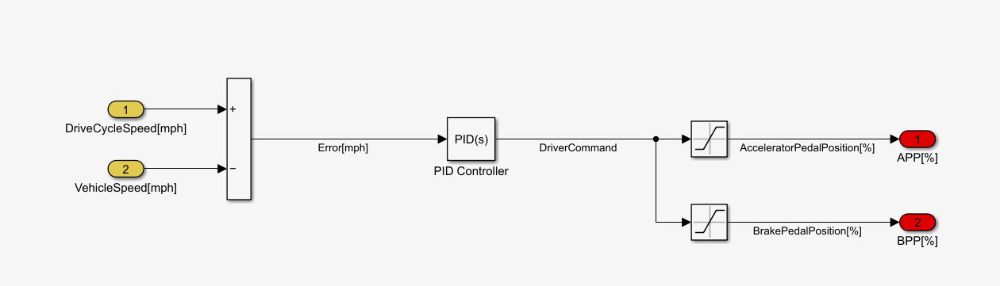